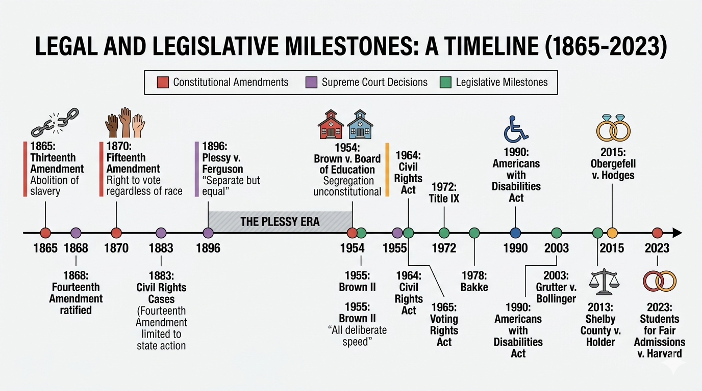
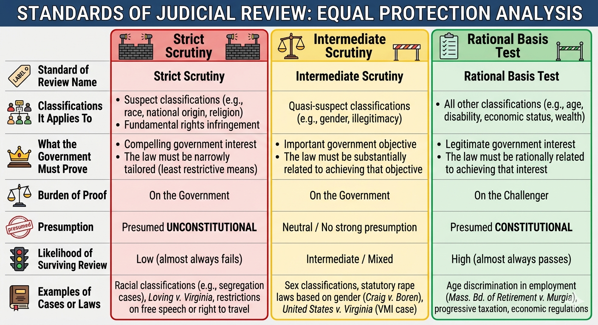

Core Objectives
- Trace the historical evolution of the Fourteenth Amendment from the post-Civil War Reconstruction era to the present, explaining how its meaning has been contested, narrowed, and ultimately expanded across more than a century of constitutional history.
- Analyze the strategic shift in judicial reasoning from Plessy v. Ferguson to Brown v. Board of Education, and evaluate the role of the NAACP's legal campaign in transforming the constitutional meaning of equal protection.
- Evaluate the three standards of judicial review — strict scrutiny, intermediate scrutiny, and the rational basis test — and explain how each standard determines whether a law's distinction between groups is constitutionally permissible.
- Assess the impact of the Civil Rights Movement on landmark legislative achievements, including the Civil Rights Act of 1964, the Voting Rights Act of 1965, Title IX, and the Americans with Disabilities Act, and explain how each extended the constitutional promise of equal protection into new domains of American life.
- Explain the ongoing constitutional debate over affirmative action and the tension between "colorblind" and "equity-based" interpretations of the Equal Protection Clause, with particular attention to the Supreme Court's recent decisions.
Key Terms
- Civil Rights
- Equal Protection Clause
- Strict Scrutiny
- Intermediate Scrutiny
- Rational Basis Test
- De Jure Segregation
- De Facto Segregation
- Affirmative Action
- Title IX
- Civil Rights Act of 1964
Introduction
The Fourteenth Amendment to the United States Constitution contains thirty-eight words that have shaped more of American legal history than almost any other passage in the nation's founding documents: "No State shall make or enforce any law which shall abridge the privileges or immunities of citizens of the United States; nor shall any State deprive any person of life, liberty, or property, without due process of law; nor deny to any person within its jurisdiction the equal protection of the laws." When Congress and the states ratified these words in 1868, they were attempting nothing less than a refounding of the American republic — a second act of constitutional creation designed to correct the fundamental contradiction that the original document had failed to resolve: the coexistence of a declaration that "all men are created equal" with a legal and social system built on the forced enslavement of millions.
The distinction between civil liberties and civil rights is essential to understanding what this chapter examines and why it matters. Civil liberties, as explored in earlier chapters, are the "negative rights" enshrined primarily in the Bill of Rights — protections against government action, the spaces where the state is forbidden to reach. The First Amendment's protections of speech and religion, the Fourth Amendment's protection against unreasonable searches, the Fifth and Sixth Amendments' procedural guarantees — all of these tell the government what it cannot do. Civil rights are something different. They are the "positive rights" — the affirmative obligations that the Constitution places on government to ensure that all persons are treated equally under the law, regardless of race, gender, religion, national origin, or other characteristics that have historically been used to deny full membership in the political community. Where civil liberties restrain government, civil rights require it to act — to strike down discriminatory laws, to protect individuals from discriminatory treatment, and in some cases to take affirmative steps to remedy the effects of past discrimination.
The history of civil rights in America is, at its core, the history of who counts as a full member of the political community. That history is neither simple nor complete. It involves constitutional amendments achieved through war, a hundred years of violent resistance to their implementation, a mass social movement of extraordinary courage and discipline, landmark legislation that transformed the legal landscape, and ongoing constitutional debates about what equality actually requires. It encompasses the experiences of Black Americans fighting for basic legal dignity in the era of Jim Crow, women challenging a legal system that treated them as dependent on men in virtually every domain of civic and economic life, people with disabilities demanding that public spaces and institutions be made accessible to them, and LGBTQ+ Americans arguing that the Constitution's guarantee of equal dignity extends to the most fundamental choices about how to live and whom to love.
Each of these struggles has played out, at least in part, in the language of the Equal Protection Clause. That clause — deceptively simple in its text, extraordinarily complex in its application — is the central constitutional tool through which the American legal system has been asked to make good on the founding promise of equality. Understanding how it works, why it has sometimes fallen short, and what it demands in the present moment is essential to understanding both the progress American democracy has made and the distance it still has to travel.

The Fourteenth Amendment fundamentally redefined American citizenship by establishing national protection for fundamental rights, ultimately shifting the balance of power between the states and the federal government after the Civil War.
Analysis Question: How did the Fourteenth Amendment attempt to resolve the fundamental contradiction of inequality present at the nation's founding?
Checkpoint
What is the primary conceptual distinction between civil liberties and civil rights as described in the text?
The Fourteenth Amendment: The "Second Founding"
The Fourteenth Amendment did not emerge from an abstract philosophical debate about the nature of equality. It was forged in the crucible of the Civil War and its aftermath — a period of extraordinary violence, political struggle, and moral reckoning that forced the nation to confront what it had always known but refused to acknowledge: that a republic dedicated to liberty could not also be a republic dedicated to slavery. Understanding the Amendment requires understanding the historical conditions from which it emerged, the purposes its drafters intended it to serve, and the ways in which those purposes were frustrated, preserved, and ultimately advanced over the following century and a half.
The Failure of Reconstruction and the Rise of Jim Crow
The Fourteenth Amendment was ratified in 1868, three years after the end of the Civil War, as part of a broader Reconstruction program designed to integrate formerly enslaved people into the civic and political life of the nation. Alongside it, the Thirteenth Amendment had abolished slavery in 1865 and the Fifteenth Amendment would guarantee the right to vote regardless of "race, color, or previous condition of servitude" in 1870. Together, these three amendments constituted what historians call the "Reconstruction Amendments" — a constitutional revolution that transformed the relationship between citizens and the national government and, at least in principle, promised Black Americans the full status of citizenship with all its attendant rights.
In practice, the promise of Reconstruction was rapidly and violently suppressed. As federal troops withdrew from the former Confederate states following the Compromise of 1877, Southern state governments enacted a comprehensive system of racial subordination known as Jim Crow laws — statutes that segregated virtually every domain of public and private life, from railroad cars and water fountains to schools and courtrooms. These laws were backed not only by the coercive power of state governments but by the terrorism of organizations like the Ku Klux Klan, which used murder, arson, and intimidation to prevent Black Americans from exercising the rights the Reconstruction Amendments had promised.
The Supreme Court provided the constitutional cover for this system. In the Civil Rights Cases of 1883, the Court struck down the Civil Rights Act of 1875, which had prohibited racial discrimination in public accommodations, on the grounds that the Fourteenth Amendment only prohibited discriminatory state action, not discrimination by private individuals or businesses. This ruling gutted the federal government's ability to protect Black Americans from discrimination by private actors and established a distinction — between state action and private conduct — that would constrain civil rights law for the next eight decades. Thirteen years later, in Plessy v. Ferguson (1896), the Court went further, providing explicit constitutional sanction for the entire Jim Crow system.
Homer Plessy was a man of mixed racial ancestry who deliberately boarded a whites-only railroad car in Louisiana as part of a planned legal challenge to the state's Separate Car Act. He was arrested and convicted, and his case reached the Supreme Court. Writing for a seven-to-one majority, Justice Henry Billings Brown held that Louisiana's law did not violate the Fourteenth Amendment's Equal Protection Clause because it provided separate but equal facilities for Black passengers. The Amendment, Brown wrote, was intended to establish political equality, not social equality. It did not prohibit "distinctions based on color" that were within "the established usages, customs and traditions of the people." The famous lone dissent came from Justice John Marshall Harlan, who insisted that "our Constitution is color-blind, and neither knows nor tolerates classes among citizens." But Harlan's view was not law for nearly sixty years.
The Plessy decision had consequences that extended far beyond railroad cars. It provided the constitutional framework for the entire apparatus of de jure segregation — the system of legal separation enforced by state and local law across not just the South but significant portions of the North and West. Schools, hospitals, parks, swimming pools, libraries, and courtrooms were segregated by law. The "equal" part of the "separate but equal" doctrine was, from the beginning, a legal fiction. Facilities designated for Black Americans were almost invariably inferior in every measurable respect — less well funded, less well maintained, staffed by teachers and doctors paid far less than their white counterparts. The Supreme Court had looked at this system and declared it constitutional. The Fourteenth Amendment's promise of equal protection had been, in the space of three decades, effectively nullified.

Following the withdrawal of federal troops in 1877, southern states systematically dismantled Reconstruction-era civil rights, substituting legal segregation and political disenfranchisement in their place.
Analysis Question: In what ways did the Supreme Court's ruling in Plessy v. Ferguson provide constitutional cover for the expansion of Jim Crow systems across the South?
Checkpoint
What was the constitutional significance of the Supreme Court's decision in Plessy v. Ferguson (1896)?
The NAACP's Legal Strategy and the Road to Brown
The legal campaign to dismantle "separate but equal" did not happen spontaneously. It was the product of a carefully constructed, decades-long strategy developed and executed by the Legal Defense Fund of the National Association for the Advancement of Colored People, led in its critical years by Thurgood Marshall, a brilliant lawyer who would later become the first Black justice on the Supreme Court. Marshall and his colleagues understood that the Supreme Court would not simply reverse Plessy in a frontal assault. Instead, they pursued a gradualist strategy: they would force the Court to apply the "separate but equal" standard with genuine rigor, demonstrating in case after case that the separate facilities provided for Black Americans were, in fact, dramatically unequal — and then, when the ground had been sufficiently prepared, they would strike at the doctrine itself.
The strategy produced a series of important victories in the 1930s and 1940s. In Missouri ex rel. Gaines v. Canada (1938), the Court held that Missouri could not satisfy the equal protection requirement by paying Black law students' tuition to attend law schools in other states — it had to either admit them to the state law school or provide a genuinely equal alternative within the state. In Sweatt v. Painter (1950), the Court ordered the University of Texas to admit a Black applicant to its law school, finding that the hastily constructed alternative Black law school Texas had created was not genuinely equal in any meaningful sense — lacking the faculty, library, prestige, and professional networks that the established school provided. These cases established that real equality, not formal equality, was what the Constitution demanded — and they made it increasingly clear that the entire enterprise of "separate but equal" rested on a foundation that could not survive serious scrutiny.
The culminating case was Brown v. Board of Education (1954), a consolidated set of cases from Kansas, South Carolina, Virginia, Delaware, and the District of Columbia, each challenging the constitutionality of racially segregated public schools. Thurgood Marshall's argument before the Court was both legal and social scientific. He presented the testimony of psychologist Kenneth Clark, who had conducted experiments with Black children and dolls demonstrating the psychological damage that segregation inflicted on Black children — the way it taught them to internalize a sense of their own inferiority. Chief Justice Earl Warren, who had taken over the Court the previous year and was determined to produce a unanimous decision on an issue he considered a matter of fundamental justice, wrote an opinion that met Marshall's argument directly.
Warren's opinion in Brown was notably brief and direct. He acknowledged that the historical record about the Framers' intent regarding school segregation was inconclusive and largely irrelevant — what mattered was the role of education in American life in the mid-twentieth century. "In these days," Warren wrote, "it is doubtful that any child may reasonably be expected to succeed in life if he is denied the opportunity of an education." Given that reality, segregation on the basis of race in public schools "generates a feeling of inferiority as to their status in the community that may affect their hearts and minds in a way unlikely ever to be undone." Therefore, "in the field of public education, the doctrine of 'separate but equal' has no place. Separate educational facilities are inherently unequal."
The unanimous decision was a constitutional watershed. But the Court's follow-up implementation decision — Brown II (1955) — introduced language that tempered the triumph. Faced with the practical problem of ordering the desegregation of thousands of school districts across the South in the face of fierce political resistance, Warren instructed that desegregation should proceed "with all deliberate speed." This phrase, deliberately ambiguous, provided an opening for delay that Southern states exploited for decades. Some school districts did not fully desegregate until the 1970s or later. The gap between the constitutional principle announced in Brown and the lived reality of American schools illustrated a truth that would recur throughout the civil rights era: winning in court was necessary, but it was not sufficient.

The NAACP Legal Defense Fund dismantled de jure educational segregation not through sudden sweeping victories, but through a deliberate, gradual strategy of proving that separate facilities were inherently unequal.
Checkpoint
What was the central legal and social argument Thurgood Marshall made before the Supreme Court in Brown v. Board of Education?
The Constitutional Legacy of the "Second Founding"
The journey from Plessy to Brown illustrates one of the central truths of American constitutional history: the meaning of a constitutional provision is not fixed at the moment of its ratification. It is contested, interpreted, and reinterpreted across generations, in response to changing social conditions, political movements, and judicial philosophies. The Equal Protection Clause of 1868 contained within it the potential for both the degradation of Plessy and the transformation of Brown. Which potential was realized depended on who was on the Court, who was making arguments before it, and what kind of social and political pressure was being exerted on the constitutional system.
This insight is central to understanding the history of civil rights in America. The Constitution does not enforce itself. It requires human agents — lawyers, activists, legislators, judges — to interpret its principles, apply them to new circumstances, and insist that the gap between constitutional text and constitutional reality be closed. The NAACP's legal strategy was not just a series of lawsuits; it was a sustained effort to shape the interpretation of a constitutional provision that had been dormant for nearly a century. The success of that strategy remade American constitutional law — and the work of remaking it continued long after Brown.

The interpretation of the Equal Protection Clause evolves over time as legal activists and social movements force the courts to reconsider previous precedents in light of changing historical contexts.
Checkpoint
What does the gap between the Brown decision and the actual pace of school desegregation reveal about the relationship between constitutional law and social change?
The Three Standards of Review
One of the most practically important doctrinal contributions of Fourteenth Amendment jurisprudence is the development of a tiered framework for evaluating laws that distinguish between groups of people. Not every distinction the law makes between different categories of individuals is unconstitutional. The government distinguishes between people all the time — between those old enough to drive and those who are not, between those who have passed a bar examination and those who have not, between citizens and non-citizens in the context of voting rights. The constitutional question is not whether the government is drawing a distinction, but whether that distinction serves a constitutionally legitimate purpose and is implemented in a constitutionally permissible way. The Supreme Court's answer to this question depends, in the first instance, on what kind of distinction is being drawn.
Strict Scrutiny and the Protection of Suspect Classifications
The most demanding standard of judicial review — strict scrutiny — applies when a law draws a distinction based on a "suspect classification": a characteristic like race or national origin that has historically been used to subject a group to systematic discrimination, that bears no relationship to a person's ability to contribute to society, and that is so tied to a person's identity as to be effectively immutable. When a law uses such a classification, the Court treats it with deep constitutional suspicion — hence the term "suspect" — and subjects it to the most searching judicial examination available.
Under strict scrutiny, a law that classifies on the basis of race or national origin is presumed to be unconstitutional. To survive, the government must demonstrate two things: first, that the law serves a compelling state interest — not merely a reasonable or important one, but one of the most serious and urgent purposes a government can have; and second, that the law is narrowly tailored to achieve that interest — meaning that it uses the least restrictive means available to accomplish its goal and does not sweep up more people or situations than are necessary to address the specific problem. In practice, strict scrutiny is frequently described as "strict in theory, fatal in fact," because very few laws survive it. When the Court applies strict scrutiny to a racial classification, the overwhelming likelihood is that the law will be struck down.
The historical application of strict scrutiny illustrates both its power and its limits. The doctrine was articulated in the 1940s, in part as a response to one of the most notorious failures of civil rights protection in American history: the internment of Japanese Americans during World War II. In Korematsu v. United States (1944), the Supreme Court actually upheld the internment under what it called strict scrutiny, finding that the military necessity of preventing espionage justified the forced relocation of over 120,000 people of Japanese ancestry, most of them American citizens, to concentration camps based solely on their ethnicity. The decision was a profound constitutional failure, later formally repudiated by the Court in Trump v. Hawaii (2018) when Chief Justice Roberts called Korematsu "objectively unlawful" and "gravely wrong." It stands as a reminder that even the most demanding standard of judicial review is only as strong as the judges applying it — and that constitutional protections are most vulnerable precisely when the political pressure to override them is greatest.

Strict scrutiny requires the highest burden of proof, demanding that the government demonstrate a compelling interest and narrowly tailor its methods when classifying groups based on race or national origin.
Analysis Question: Why does the judicial system differentiate between "suspect classifications" like race and other types of classifications when reviewing the constitutionality of a law?
Checkpoint
Why does the Supreme Court apply strict scrutiny to laws that classify on the basis of race or national origin?
Intermediate Scrutiny and the Evolution of Gender Equality
The middle tier of the Court's scrutiny framework — intermediate scrutiny — developed primarily in the context of laws that classify on the basis of gender. For much of American history, legal distinctions based on sex were treated by courts as presumptively reasonable, reflecting what judges and legislators accepted as natural differences in the roles and capacities of men and women. The constitutional revolution in gender equality that occurred in the 1970s was, in significant part, the result of a sustained litigation strategy analogous to the NAACP's campaign against racial segregation — and the lawyer most responsible for it was Ruth Bader Ginsburg, then a professor at Columbia Law School and director of the ACLU Women's Rights Project, who would later serve on the Supreme Court.
Ginsburg's strategy was to persuade the Court that sex-based classifications, like race-based ones, reflected stereotypes rather than genuine differences, and that they harmed not just women but the operation of a legal system premised on equal treatment. In Reed v. Reed (1971), she persuaded a unanimous Court to strike down an Idaho law that automatically preferred male relatives over female relatives as estate administrators — the first time the Court had ever invalidated a law on the grounds of sex discrimination. She followed this with a series of cases that, cumulatively, established that sex was a constitutionally sensitive classification requiring a meaningful level of judicial scrutiny.
The standard that emerged — intermediate scrutiny — requires that a law classifying on the basis of sex be substantially related to an important government objective. This is less demanding than the "compelling interest" and "narrow tailoring" required under strict scrutiny, but it is meaningfully more demanding than the rational basis test that had previously allowed any plausible justification to suffice. Under intermediate scrutiny, stereotypical assumptions about the different roles or abilities of men and women — the kind of reasoning that underlies laws requiring women but not men to pay alimony, or excluding women but not men from military service positions — will not survive constitutional challenge. The government must demonstrate that its sex-based distinction responds to a genuine and significant difference relevant to the purpose of the law, not simply to social convention about how men and women are supposed to behave.

The establishment of intermediate scrutiny forced the government to prove that sex-based legal classifications served an important objective rather than merely reflecting traditional gender stereotypes.
Checkpoint
What is the constitutional standard applied to laws that classify on the basis of sex, and what must the government demonstrate to justify such a law?
The Rational Basis Test and the Outer Limits of Equal Protection
At the base of the Court's scrutiny framework sits the rational basis test — the standard applied to laws that distinguish between groups based on characteristics that are neither suspect classifications nor sex-based. Age, wealth, educational attainment, disability, and countless other characteristics that governments routinely use to classify people for various purposes are evaluated under this deferential standard. Under rational basis review, a law is presumed to be constitutional, and a court will uphold it as long as it is reasonably related to any legitimate government interest — even one the legislature did not explicitly articulate and even one that is somewhat speculative. The government does not need to prove that its classification actually achieves its stated purpose; it needs only to show that a rational lawmaker could have believed it would.
The rational basis test is, by design, a highly permissive standard. It reflects the principle that legislative bodies, as the democratically elected representatives of the people, have wide latitude to make policy judgments about how to regulate social and economic conditions, and that courts should not second-guess those judgments absent a compelling constitutional reason. A law setting the minimum driving age at sixteen, requiring certain professionals to hold specific licenses, or imposing higher tax rates on higher incomes — all of these make distinctions between people, and all of them easily satisfy the rational basis standard because there are obvious, legitimate reasons a legislature might choose to enact them.
The rational basis test has occasionally been applied with somewhat greater scrutiny in cases involving classifications that, while not formally suspect, have been used to target particularly vulnerable groups. The Court's decision in Romer v. Evans (1996), which struck down a Colorado constitutional amendment that prohibited any governmental protection for gay and lesbian individuals, applied the rational basis label while reasoning in a manner that suggested something more demanding was at work. Justice Kennedy's opinion held that a law motivated by "bare... desire to harm a politically unpopular group" could not satisfy even the rational basis standard — a principle that has had significant implications for subsequent equal protection litigation involving LGBTQ+ individuals.

The rational basis test permits legislatures broad latitude to govern routine economic and social policies, provided the law is reasonably related to a legitimate public interest.
The Logic of Tiered Scrutiny
The three-tier framework of judicial review reflects a considered judgment about which distinctions are most likely to reflect prejudice rather than legitimate policy, and which groups are most in need of judicial protection because they have the least ability to protect themselves through the political process. Racial minorities, who were subject to systematic legal discrimination backed by state violence and who were excluded from political participation through devices like the white primary, the literacy test, and the grandfather clause, clearly could not rely on ordinary democratic politics to protect their rights — which is precisely why the Court treats race-based classifications with the deepest constitutional suspicion. Women, who were excluded from political participation for most of American history and who continue to face stereotyping and structural barriers in many domains, receive an intermediate level of protection. Groups that face discrimination but that have not historically been as systematically excluded from political power receive the more deferential rational basis review.
This framework is not without its critics. Some scholars argue that the tier system is too rigid — that it fails to capture the full complexity of different kinds of discrimination and produces results that are sometimes arbitrary. Others argue that it is too loose — that the rational basis test provides essentially no protection at all for groups that fall below the scrutiny threshold. But the framework has proven durable because it offers what constitutional adjudication requires: a principled, somewhat predictable method for deciding some of the most politically charged questions a court can face.

The tier system of judicial review provides a predictable framework for courts to determine which legal distinctions reflect legitimate policy and which are likely born of historic prejudice.
Checkpoint
Under which circumstances does the Supreme Court apply the rational basis test, and what must the government demonstrate under this standard?
Legislative Milestones and Social Movements
Constitutional adjudication, even at its most transformative, is only one dimension of the civil rights story. The Supreme Court's decisions in Brown and the cases that followed provided a constitutional framework — they established that racial segregation was incompatible with the Equal Protection Clause and that legal distinctions based on race or sex could not simply be assumed to be reasonable. But converting those constitutional principles into the lived experience of millions of Americans required something the courts could not provide: mass social mobilization, political organizing, and legislative action. The Civil Rights Movement of the 1950s and 1960s, and the social movements that followed it, forced the political system to translate constitutional principles into statutory law — into the specific rules, institutions, and enforcement mechanisms through which the promise of equal protection became a practical reality.
The Civil Rights Act of 1964 and the Commerce Clause
The Civil Rights Act of 1964 was the most comprehensive civil rights legislation enacted since Reconstruction, and its passage required overcoming one of the most determined congressional filibusters in American history — twenty-two senators from the South held the Senate floor for sixty days in an attempt to prevent a vote. When President Lyndon Johnson finally signed the Act on July 2, 1964, it fundamentally changed the legal landscape of American life.
Title II of the Act prohibited discrimination on the basis of race, color, religion, or national origin in "public accommodations" — hotels, motels, restaurants, theaters, and other establishments open to the general public. This was the provision that the Civil Rights Cases of 1883 had held Congress could not enact under the Fourteenth Amendment, which only reached state action. Congress in 1964 found a constitutional foundation elsewhere: the Commerce Clause, which grants Congress the power to regulate interstate commerce. Because hotels and restaurants that discriminated against Black customers were businesses engaged in interstate commerce — they served interstate travelers, purchased goods shipped across state lines — Congress could regulate their conduct directly. The Supreme Court unanimously upheld this reasoning in Heart of Atlanta Motel v. United States (1964), decided just months after the Act's passage.
Title VII of the Act prohibited employment discrimination based on race, color, religion, sex, or national origin — a prohibition that applied to virtually all employers of significant size. It created the Equal Employment Opportunity Commission to investigate and address complaints of discriminatory employment practices. Title VII's inclusion of sex as a protected category was, somewhat remarkably, the result of an amendment offered by Virginia Representative Howard Smith, a fierce opponent of the legislation who added "sex" to the list of prohibited categories in the belief that it would make the bill too radical to pass. The amendment had the opposite effect, and Title VII's prohibition on sex discrimination in employment became one of the most consequential legal provisions of the twentieth century.

The Civil Rights Act of 1964 leveraged the commerce clause to dismantle segregation in public accommodations, proving that sweeping legislative action was necessary to enforce constitutional principles.
Analysis Question: How did the Civil Rights Act of 1964 and the Voting Rights Act of 1965 achieve goals that the Supreme Court's earlier desegregation rulings could not accomplish on their own?
Checkpoint
What constitutional basis did Congress use to prohibit racial discrimination in private businesses in the Civil Rights Act of 1964, and why was this approach necessary?
The Voting Rights Act of 1965 and the Right to Participate
If the Civil Rights Act of 1964 addressed the denial of equal access to public life, the Voting Rights Act of 1965 addressed a denial even more fundamental to democratic government: the systematic exclusion of Black Americans from the political process itself. Across the South, a battery of devices — literacy tests administered selectively and in bad faith, poll taxes, registration systems designed to confuse and discourage, and outright violence against those who attempted to register — had maintained near-total Black disenfranchisement in many states for decades after the Fifteenth Amendment had guaranteed the right to vote regardless of race.
The events that precipitated the Act's passage occurred in Selma, Alabama, in early 1965. When peaceful marchers attempting to cross the Edmund Pettus Bridge on their way to the state capital were met by state troopers with clubs and tear gas on March 7 — a day that became known as Bloody Sunday — the images broadcast on national television shocked the conscience of much of the country and produced irresistible political pressure for federal action. President Johnson appeared before a joint session of Congress eight days later and, in one of the most consequential presidential addresses of the twentieth century, declared that "we shall overcome" — adopting the anthem of the Civil Rights Movement as the statement of his administration's legislative purpose.
The Voting Rights Act that Congress enacted prohibited literacy tests and other discriminatory voting devices in states and jurisdictions with demonstrated histories of voting discrimination. Its most powerful provision — Section 5, the "preclearance" requirement — mandated that covered states and localities obtain approval from the federal government before implementing any change to their voting laws or procedures. The preclearance requirement was a direct response to the experience of the preceding century, during which Southern states had repeatedly devised new discriminatory mechanisms as fast as courts struck down old ones. By requiring advance federal approval of any voting change, Section 5 shifted the burden: rather than civil rights lawyers having to challenge each new discriminatory innovation after the fact, the covered jurisdiction had to demonstrate in advance that its proposed change would not have a discriminatory purpose or effect.
The Act produced dramatic and rapid results. Black voter registration in the South increased substantially within just a few years of its enactment, and Black political representation at every level of government began to grow for the first time in nearly a century. The preclearance provision remained a central feature of American voting rights law for nearly five decades, until the Supreme Court's decision in Shelby County v. Holder (2013) effectively invalidated it by holding that the coverage formula Congress had used to determine which jurisdictions were subject to preclearance was based on outdated data and therefore exceeded Congress's constitutional authority. In the years following Shelby County, many of the jurisdictions previously subject to preclearance moved quickly to enact voting restrictions that critics argued had discriminatory effects — a development that reignited intense national debate about the continuing vitality of the Voting Rights Act and the adequacy of existing protections for minority voting rights.

The Voting Rights Act of 1965 instituted federal oversight and the preclearance requirement, systematically reversing decades of state-enacted voter suppression and disenfranchisement.
Checkpoint
What was the purpose of the "preclearance" requirement in the Voting Rights Act of 1965, and how did Shelby County v. Holder (2013) affect it?
Expanding the Circle: Title IX, the ADA, and LGBTQ+ Rights
The legislative and constitutional work of the Civil Rights Movement created a framework and a language — the language of equal protection, non-discrimination, and equal access — that subsequent social movements drew upon to extend civil rights protections to new groups and new domains of American life. Three expansions are particularly significant both for their scope and for the constitutional and legislative principles they illustrate.
Title IX of the Education Amendments of 1972 prohibited discrimination based on sex in any educational program or activity receiving federal financial assistance. The law's most visible impact has been in collegiate and high school athletics, where it requires that women and girls have athletic opportunities substantially proportionate to their enrollment, that institutions provide equivalent scholarships and resources, and that the general sporting experiences offered to men and women be comparably adequate. But Title IX's scope extends far beyond athletics. It prohibits sexual harassment in schools, requires institutions to respond meaningfully to complaints of sexual assault and relationship violence, and has been interpreted to protect students from discrimination based on gender identity. The law reflects the same principle as the Voting Rights Act and the Civil Rights Act: that federal financial support carries with it the condition of equal treatment, and that the federal spending power can be used to leverage non-discrimination requirements even in domains where direct constitutional prohibition might be more difficult to establish.
The Americans with Disabilities Act of 1990 extended the civil rights framework to Americans with physical and mental disabilities, requiring that public buildings, transportation systems, employers, and government programs be made accessible through "reasonable accommodations." The ADA reflected a conceptual shift in how disability was understood: from a personal misfortune that removed a person from the mainstream of social life to a social condition — one in which the barriers people with disabilities faced were created not by their impairments themselves but by a built environment and social organization designed around the assumption of able-bodiedness. By requiring reasonable accommodations, the ADA placed the burden of adjustment on institutions rather than individuals, treating access as a civil right rather than a charity.
The extension of civil rights protections to LGBTQ+ Americans has been one of the most rapid and contested developments in the recent history of constitutional law. The Supreme Court's decision in Obergefell v. Hodges (2015) held that the Constitution's guarantees of liberty and equal protection require states to license and recognize same-sex marriages. Justice Kennedy's majority opinion drew on both the Due Process Clause — treating the right to marry as a fundamental liberty — and the Equal Protection Clause — treating the exclusion of same-sex couples from marriage as a denial of equal dignity. The decision was a constitutional landmark, but it did not resolve all questions about the legal status of LGBTQ+ individuals in other contexts, including employment discrimination, housing, and access to public accommodations — areas where litigation and legislation continue to define the boundaries of constitutional protection.

The legal framework developed during the mid-twentieth century provided the language and constitutional leverage for subsequent movements to secure protections against sex, disability, and sexual orientation discrimination.
Checkpoint
What shared constitutional and legislative principle underlies Title IX, the Americans with Disabilities Act, and the civil rights protections extended to LGBTQ+ Americans?
The Modern Debate | Equity and Affirmative Action
The civil rights struggles of the twentieth century — the litigation campaign against segregation, the mass social movement that produced the Civil Rights Act and the Voting Rights Act, the legislative extensions of equal protection to women, people with disabilities, and LGBTQ+ Americans — were organized around a relatively clear constitutional principle: the government may not discriminate against individuals because of their membership in a protected group. The harder constitutional question — and the one that has generated the most contentious legal and political debate in recent decades — is whether the Constitution permits or requires the government to take the membership of individuals in historically disadvantaged groups into account in order to remedy the effects of past discrimination. This is the question at the heart of affirmative action.
Affirmative Action, the Courts, and the Limits of Race-Conscious Policy
Affirmative action policies emerged in the late 1960s and 1970s as a response to the recognition that eliminating formal legal discrimination was necessary but not sufficient to produce genuine equality of opportunity. A century of legally enforced subordination had produced profound and persistent inequalities in education, wealth, employment, and housing that did not simply dissolve when the laws requiring discrimination were repealed. If universities, employers, and government agencies continued to use traditional selection criteria — standardized test scores, grades, prior work experience, professional networks — without modification, they would continue to produce workforces and student bodies that reflected the inequalities produced by the discriminatory past, not the equal opportunity that the Constitution now nominally guaranteed.
The Supreme Court first addressed the constitutionality of race-conscious university admissions in Regents of the University of California v. Bakke (1978). Allan Bakke, a white applicant, challenged the University of California at Davis Medical School's admissions program, which reserved sixteen seats in each entering class for minority applicants. Justice Lewis Powell, writing a pivotal opinion that no other justice joined in its entirety, held that the specific program before the Court was unconstitutional because it amounted to a rigid racial quota — a fixed numerical allocation of positions based solely on race. The Equal Protection Clause, Powell concluded, required that each individual be evaluated as an individual, not merely as a representative of a racial group. But Powell also held — crucially — that diversity in higher education was a compelling state interest that could justify the consideration of race as one factor among many in an individualized admissions process. Race could be a "plus factor," but it could not be a quota.
For the next twenty-five years, Bakke remained the governing precedent, with universities designing admissions processes that considered race as one element of a holistic review. In Grutter v. Bollinger (2003), the Supreme Court — in an opinion by Justice Sandra Day O'Connor — upheld the University of Michigan Law School's race-conscious admissions program, affirming that student body diversity was a compelling state interest and that the law school's individualized, holistic process was narrowly tailored to achieve it. O'Connor's opinion contained a notable prediction: that the Court expected race-conscious admissions to be unnecessary in twenty-five years, as the pipeline of qualified minority students grew and other means of achieving diversity became available.
That prediction proved prophetic in an unexpected way. In Students for Fair Admissions v. Harvard (2023), a six-to-three majority of the Supreme Court held that the race-conscious admissions programs at Harvard University and the University of North Carolina violated the Equal Protection Clause. Chief Justice Roberts's majority opinion concluded that the universities' programs did not satisfy strict scrutiny because they lacked sufficiently measurable objectives, used race as a negative factor against Asian American applicants in some respects, and had no defined endpoint. More fundamentally, Roberts wrote, "eliminating racial discrimination means eliminating all of it" — a statement that reflected the majority's adoption of a strongly "colorblind" interpretation of the Equal Protection Clause. The decision did not explicitly overrule Grutter but effectively ended race-conscious admissions in American higher education.
The Students for Fair Admissions decision crystallized the deepest constitutional disagreement in contemporary civil rights law: whether the Equal Protection Clause is best understood as a mandate for colorblindness — a rule that the government may never classify individuals by race, regardless of purpose — or as a mandate for equal status — a rule that permits race-conscious remedies when they are necessary to achieve genuine equality of opportunity for groups that have been systematically disadvantaged by race-conscious oppression. The majority's position reflects the former view; the dissenters, led by Justice Sonia Sotomayor, argued forcefully for the latter.

Affirmative action policies were originally implemented to address the generational effects of historical discrimination by ensuring equal opportunity within institutions that had long practiced exclusion.
Analysis Question: How does the debate between an "equity-based" and a "colorblind" interpretation of the Equal Protection Clause reflect differing views on the lingering impact of systemic discrimination?
Checkpoint
What distinguishes the Supreme Court's ruling in Regents of the University of California v. Bakke (1978) from its ruling in Students for Fair Admissions v. Harvard (2023)?
De Facto Segregation and the Limits of Legal Remedies
The end of de jure segregation — the formal legal separation of the races mandated by state law — was a constitutional and legislative achievement of the highest order. But the elimination of legal segregation did not produce integrated schools, integrated neighborhoods, or equal educational and economic opportunity for Black Americans and other historically excluded groups. In its place, de facto segregation — the separation of races that results not from explicit legal mandate but from the interaction of housing patterns, economic inequality, school district boundaries, and private choices — became one of the most persistent and most difficult civil rights challenges of the post-Civil War era.
The roots of contemporary de facto segregation are not, however, purely "natural" or the result of individual choices made freely and independently. They are substantially the product of deliberate government and private policies — "redlining," the practice by which the Federal Housing Administration and private banks denied mortgages and insurance to residents of Black neighborhoods in the mid-twentieth century; racially restrictive covenants in housing deeds that prohibited the sale of property to Black buyers; public housing policies that concentrated poverty in segregated neighborhoods; and school district boundaries drawn to maintain racial separation after the explicit legal apparatus of segregation was dismantled. De facto segregation, in other words, is not simply what happened naturally after de jure segregation ended. It is what was engineered to replace it.
The constitutional challenge posed by de facto segregation is significant. The Equal Protection Clause, as interpreted since the civil rights era, prohibits intentional discrimination — the deliberate use of race to disadvantage a group. It does not, in most circumstances, require the government to remedy the unintentional racially disparate effects of facially neutral policies. A school district whose racial composition reflects residential segregation produced by redlining decades earlier is not necessarily engaged in unconstitutional discrimination, even if the result is schools that are as racially segregated as anything produced by Jim Crow. This gap between the constitutional prohibition on intentional discrimination and the persistent reality of structural inequality remains one of the central unresolved tensions in American civil rights law — a reminder that the Fourteenth Amendment's promise of equal protection is still, more than a century and a half after its ratification, incompletely fulfilled.

Unlike de jure segregation, which was mandated by explicit laws, de facto segregation persists through structural inequalities, geographic housing patterns, and historical economic disparities.
Checkpoint
What is the primary difference between de jure segregation and de facto segregation as described in the text?
The Unfinished Work of Equal Protection
The constitutional debates over affirmative action and de facto segregation are not abstract legal puzzles. They reflect genuine and deeply felt disagreements about the nature of equality, the obligations of a democratic republic to remedy the injustices of its past, and the role that government institutions — courts, legislatures, executive agencies — can and should play in producing a more just society. These debates will not be resolved quickly or easily, because they engage competing values that each have legitimate constitutional grounding: the principle that individuals should be treated as individuals, not as representatives of racial groups; and the principle that genuine equal opportunity cannot be achieved by ignoring the historical and structural conditions that have made opportunity so unequal for so long.
What the Fourteenth Amendment provides is not a resolution of this debate, but a framework within which it must be conducted. It insists that the conversation about equality be conducted in constitutional terms — that distinctions between citizens be justified, that the most vulnerable groups receive the most searching judicial protection, and that the government's claim to be treating all persons equally be subjected to meaningful scrutiny. That insistence, imperfectly honored as it has often been, is the Fourteenth Amendment's enduring contribution to the ongoing project of American democracy.

The fulfillment of the equalization promise of the Fourteenth Amendment remains an ongoing societal debate, continuously testing the capacity of constitutional frameworks to address systemic disparity.
Checkpoint
Why does de facto segregation present a more difficult constitutional challenge than de jure segregation?
Chapter Conclusion

While a century of civil rights advancements successfully dismantled the formal architecture of state-sponsored discrimination, the challenge of securing genuine social and economic justice remains a defining feature of the American democratic project.
Analysis Question: Based on the evolution of civil rights, what role do you believe both the courts and active citizens must play in addressing the unfinished realities of structural inequality?
The history of the Fourteenth Amendment's Equal Protection Clause is, in microcosm, the history of the American promise of equality — a promise made and broken, contested and reclaimed, partially honored and persistently incomplete. The Amendment was ratified in 1868 to transform the constitutional order after the Civil War, to make the Declaration of Independence's assertion that "all men are created equal" into enforceable constitutional law. Within three decades, the Supreme Court had effectively nullified it through Plessy v. Ferguson. It took another fifty-eight years of organizing, litigation, and social movement struggle to produce Brown v. Board of Education, and another decade of mass protest, legislative effort, and political courage to produce the Civil Rights Act of 1964 and the Voting Rights Act of 1965. And the work has continued — through the expansion of civil rights protections to women, people with disabilities, and LGBTQ+ Americans, and through ongoing debates about what genuine equality requires in a society still shaped by the inequalities of the past.
This chapter's essential question — how the Equal Protection Clause has been strategically utilized to move the United States toward a "more perfect union" — invites a sober assessment of both the progress that has been made and the distance that remains. The progress is real and extraordinary. A country that in 1896 provided constitutional sanction for the systematic legal degradation of millions of its citizens has, over the course of a century, prohibited discrimination in virtually every domain of public life, extended full political participation to groups previously excluded from it, and developed a constitutional framework that subjects government discrimination to rigorous judicial scrutiny. The distance is also real. De facto segregation persists in American schools and neighborhoods. Economic inequality maps closely onto racial inequality in ways that formal legal equality has not remedied. The debate over affirmative action reflects genuine uncertainty about what the Constitution requires when formal equality is insufficient to produce genuine opportunity.
The constitutional framework of the Fourteenth Amendment does not resolve these questions automatically. It provides tools — the Equal Protection Clause, the tiered scrutiny framework, the incorporation of civil rights protections through federal legislation — that successive generations have deployed to move the constitutional promise closer to constitutional reality. Whether those tools are adequate to the challenges of the twenty-first century — the challenges of algorithmic discrimination, structural economic inequality, and the persistence of racial disparities in virtually every domain of American life — is a question that the next generation of constitutional interpreters, legislators, activists, and citizens will have to answer. The Fourteenth Amendment's invitation to that work remains open.
Chapter Assessment
Section I — Vocabulary
Word Bank: Civil Rights, Equal Protection Clause, Strict Scrutiny, Intermediate Scrutiny, Rational Basis Test, De Jure Segregation, De Facto Segregation, Affirmative Action, Title IX, Civil Rights Act of 1964
1. The Fourteenth Amendment provision that prohibits states from denying "any person within its jurisdiction the equal protection of the laws" is called the .
2. Segregation that is imposed by law — such as the Jim Crow statutes that mandated separate facilities for Black and white Americans — is called .
3. The highest level of judicial review, applied to laws that classify on the basis of race or national origin, requiring the government to demonstrate a compelling state interest and narrow tailoring, is called .
4. The legal and constitutional protections provided by the government to ensure equal treatment and prevent discrimination based on group characteristics are called .
5. A mid-level judicial standard applied to laws that classify on the basis of sex, requiring the government to demonstrate that the law is substantially related to an important government objective, is called .
6. Policy initiatives designed to increase opportunities for historically underrepresented groups in education and employment in order to address the effects of past discrimination are called .
7. The federal law that prohibits discrimination based on sex in educational programs receiving federal financial assistance is .
8. The landmark 1964 legislation that prohibited discrimination based on race, color, religion, sex, or national origin in public accommodations and employment is the .
9. The lowest level of judicial scrutiny, under which a law is upheld if it is reasonably related to any legitimate government interest, is the .
10. Segregation that occurs not because of legal mandate but because of residential patterns, economic inequality, and social conditions is called .
Section II — Comprehension
Checkpoint (Assessment)
1. What did the Supreme Court hold in Plessy v. Ferguson (1896), and on what constitutional reasoning did it rely?
2. The NAACP's legal strategy before Brown v. Board of Education was primarily designed to:
3. What phrase in the Supreme Court's Brown II decision (1955) allowed many Southern states to delay school desegregation for years?
4. Under strict scrutiny, a law that classifies on the basis of race is:
5. Congress grounded the Civil Rights Act of 1964's prohibition on discrimination in public accommodations primarily in:
6. The "preclearance" provision of the Voting Rights Act of 1965 required that:
7. In Regents of the University of California v. Bakke (1978), the Supreme Court held that:
8. What was the primary constitutional basis for the Supreme Court's decision in Obergefell v. Hodges (2015)?
Section III — Guided Analysis
Section IV — Visual Analysis

Analysis Question: What pattern do you notice in the timing and clustering of civil rights milestones? What does the fifty-eight-year gap between Plessy and Brown reveal about the relationship between constitutional text and constitutional enforcement?
Analysis Question: Identify one Supreme Court decision on the timeline that you believe expanded civil rights and one that you believe limited them. Using evidence from the chapter, explain the constitutional reasoning behind each and assess which had the greater long-term impact on the lives of Americans.

Analysis Question: Based on the chart, which standard of review provides the strongest protection for individuals against government discrimination? Which provides the least? What constitutional logic justifies this difference?
Analysis Question: The chapter notes that the rational basis test has occasionally been applied with greater scrutiny in cases involving laws targeting politically unpopular groups. Using the chart as a reference, explain why this variation matters. Should courts apply a more demanding standard to laws that target groups based on sexual orientation? Why or why not?
Section V — Primary Source (CER)
Primary Source Excerpt: Brown v. Board of Education, 347 U.S. 483 (1954) — Chief Justice Earl Warren, writing for a unanimous Court:
"We conclude that, in the field of public education, the doctrine of 'separate but equal' has no place. Separate educational facilities are inherently unequal. Therefore, we hold that the plaintiffs and others similarly situated for whom the actions have been brought are, by reason of the segregation complained of, deprived of the equal protection of the laws guaranteed by the Fourteenth Amendment."
Claim: Make a claim about whether the Supreme Court's reasoning in Brown was a faithful interpretation of the Fourteenth Amendment's original constitutional meaning, or whether it represented a departure from original meaning justified by changing social and historical circumstances.
Evidence: Quote or closely paraphrase at least one specific phrase from the excerpt above. Then connect the Court's reasoning to at least one other case, concept, or historical development from the chapter.
Reasoning: Explain how the evidence supports your claim. Consider whether Chief Justice Warren's argument represents an evolution of constitutional interpretation or a betrayal of it. What does your answer reveal about how the meaning of constitutional provisions changes over time?